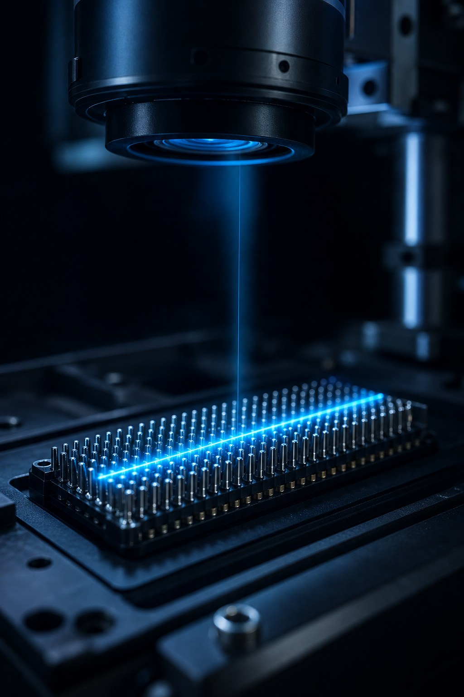

Field & Bench
Engineering photography
Real connector geometry and 3D scan meshes from the bench and the factory floor — the physical context behind the inspection systems.
I design and ship machine-vision, 3D metrology, and AI-assisted inspection systems for complex factories — Cognex VisionPro, fixtureless metrology, traceability, and production deployment.
I am an industrial computer-vision and 3D metrology systems leader focused on building inspection, automation, and data systems that work under real production conditions. I specialize in turning difficult inspection problems into working production systems: calibrated vision workflows, 3D line-scan inspection, fixtureless coordinate alignment, weak-feature recovery, barcode-linked traceability, AOI cross-validation, runtime diagnostics, and customer-reviewable acceptance outputs.
My career has moved across software development, electronics manufacturing, machine vision, process engineering, AI research, blockchain systems, and algorithmic trading. That combination gives me a practical engineering perspective: I understand the software, the machine, the factory, the operator, the data, and the customer requirement.
Today I lead advanced vision and field-engineering work involving calibrated inspection, 3D line scan, high-density connector validation, traceability outputs, customer deployment support, and technical training. Through Rlab and TopX, I continue to explore AI agents, financial ML, blockchain/EVM systems, multimodal reasoning, and software tools that accelerate engineering work.
Manufacturing vision problems are rarely solved by one tool or one algorithm. They require optics, lighting, calibration, software architecture, data structure, tolerancing, customer constraints, operator workflow, and production reality to work together. The best system is not just the one that finds the feature — it is the one that tells the engineer why it passed, why it failed, where the data came from, what changed, and what action should happen next.

“Engineering inspection systems that explain themselves.”— building the bridge between machine vision, 3D metrology, AI systems, and manufacturing intelligence
My work bridges vision engineering, industrial software, manufacturing intelligence, and applied AI — from photons to pass/fail to production learning.
Cognex VisionPro, QuickBuild, and Designer workflows — PMAlign, Blob, Caliper, 2D/3D correlation, calibrated transforms, 3D range/height images, overlay graphics, radial error analysis, and deterministic image-processing pipelines.
C#, Python, C++, and .NET for VisionPro scripting, tool-block architecture, expression routing, TCP/IP integration, Windows automation, data parsing, CSV/BMP generation, SQL data models, traceability, and result archival.
SMT/THT, high-density connector inspection, press-fit validation, odd-form automation, AOI comparison, NPI and PPAP support, defect review, RMA feedback loops, drift detection, and production-quality analytics.
AI agents, financial LLM/ML data processing, NLP pipelines, reinforcement-learning concepts, multimodal SLM cognition analysis, Solidity/EVM research, DeFi architecture concepts, and algorithmic trading and backtesting.
Real connector geometry and 3D scan meshes from the bench and the factory floor — the physical context behind the inspection systems.
The work I am known for — inspection concepts that moved from idea to patent filing, production deployment, and customer acceptance.

Patent-pending concepts for fixtureless inspection using drill-drawing nominal coordinates, calibrated transforms, N-point fitting, best-fit alignment, radial deviation analysis, and per-pin acceptance logic.

CPU-based weak-feature recovery workflows that analyze local ROIs, normalize contrast, apply adaptive weak thresholding, select top-percent bright pixels, compute weighted centroids, and output confidence values, CSV fields, and optional overlay graphics.

Inline 2D/3D inspection using range/height images, line-scan profile data, VisionPro 3D tools, overlay graphics, barcode-linked traceability, and customer-reviewable evidence packages.

Pin-location validation, tolerance scoring, and traceable customer review outputs for difficult connector and press-fit scenarios — plus closed-loop quality intelligence connecting inspection outputs, drift, and RMA feedback.
Step through measured pin positions, best-fit alignment to nominal coordinates, and tolerance-ring acceptance — the core logic behind fixtureless grid inspection.
Tap a pin — or Inspect outlier — to read residual deviation.
The raw measurement carries a systematic pose error (translation + rotation) that would fail every pin under naive comparison. Best-fit alignment removes the pose error so tolerance scoring judges only true per-pin deviation — grey dots are drill-drawing nominal sites, rings are 120 µm acceptance zones, and orange pins are genuine outliers.
“I build systems for the real world, not just clean demos. The best system is not just the one that finds the feature — it is the one that explains itself.”— engineering philosophy
Beyond inspection deployments, I design and ship the software around the process — training platforms, analytics suites, coordinate generators, knowledge systems, and proprietary sensor interfaces.

Offline training platform for Cognex VisionPro engineers — structured curriculum across 2D/3D tools, calibration and fixturing theory, script families, learning paths, quizzes, and certification finals. Ships as a self-contained desktop package for factory training with no internet required.

Offline-first analytics suite that monitors inspection CSV output and turns pin-level data into process intelligence: spatial heatmaps, 3D coplanarity, tolerance-ring pin maps, repeatability review, source correlation, and shareable customer reports.
Coordinate-model builder that converts drill-drawing and CSV nominal data into inspection-ready pin grids — the nominal-geometry backbone behind fixtureless grid inspection.
Related case study →
Offline AI knowledge base for engineering organizations — Electron desktop shell with local RAG over Word/PDF libraries, streaming chat, multi-provider LLMs, ChromaDB vector search, industry-signal radar, and evidence-weighted forecasting. Documents stay on the machine.
Proprietary C# interface bridging Keyence LJ-X laser profilometer heads directly into Cognex VisionPro — high-speed profile streaming over Ethernet, external batch-start control, model-based Y/Z pitch management, and calibrated height/luminance range images ready for 3D tooling.

The flagship: production-ready VisionPro/QuickBuild/Designer workflows for SMT/THT, odd-form, press-fit, and high-density connector inspection — rough pose alignment, calibrated fixture transforms, per-feature measurement, operator review, customer acceptance, and barcode-linked traceability.
My field-execution work spans advanced manufacturing sites across Vietnam, Mexico, the United States, Taiwan, and Thailand — including Guadalajara and Mexicali, Houston, and broader Asia-Pacific and North American production environments.
The value is not travel or installation support. It is getting inspection systems configured, validated, trained, debugged, documented, accepted, and moved to production readiness: machine qualification, sample testing, customer training, defect review, output-format confirmation, repeatability review, action-list creation, and final handoff.
I have worked through the practical challenges that appear when vision systems move from development to customer factories — lighting variation, calibration drift, fixture differences, weak features, data-output mismatches, operator workflow, and production pressure. That field experience shapes how I build: for factories, customers, technicians, engineers, and operators who need clear results, reliable data, and actionable feedback.

More than a decade across vision engineering, SMT/THT process leadership, and founder-led R&D. Full bullets on the web resume.
Baker College Center for Graduate Studies · 2010 — 2013
Baker College of Muskegon · 2002 — 2006
Technical depth plus the leadership and collaboration it takes to get inspection systems accepted, trained, and running in real factories.
Write-ups on weak-feature recovery, CSV-to-acceptance workflows, and global 3D deployment.

TopXFin, TopXAgents, reinforcement-learning trading research, and EVM/Solidity systems.

Live crypto, forex, and index data with technical analysis, powered by TradingView.

Travel photography, AI-generated art, and life behind the lens.
I am interested in advanced engineering work involving machine vision, 3D inspection, AI-assisted automation, manufacturing intelligence, technical leadership, customer deployment, and applied R&D. Based in New York, USA — open to relocation and international assignments.